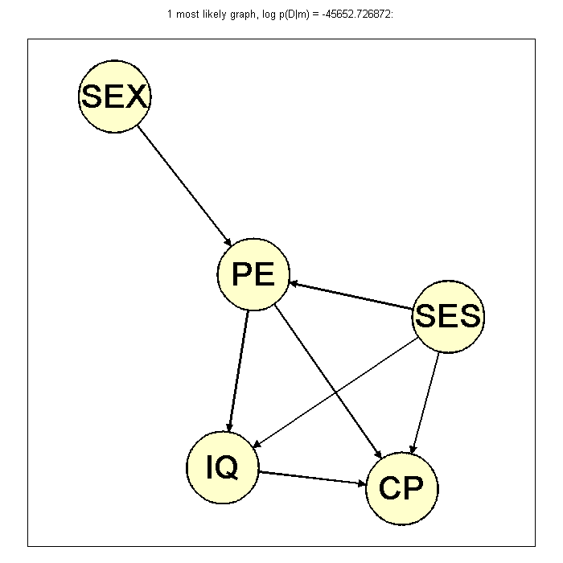
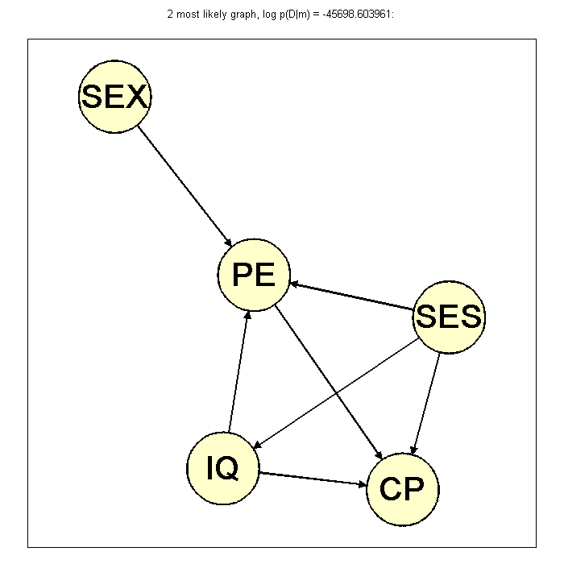

Posterior over 5-node DAGs on Sewell-Shah college data
Iterate through all 5 node DAG and calculate the marginal likelihood to determine the most likely strucutre to explain the college data.
Contents
% This file is from pmtk3.googlecode.com loadData('sewellShah'); X = X(:,2:end) + 1; [N, D] = size(X); ns = [2 4 2 2 4]; alpha = 5; % generate all dags of size D and find out the marginal likelihood %Gs = mk_all_dags(D); loadData(sprintf('dags%d', D)); numDags = length(Gs) margLik = zeros(numDags, 1); for i = 1:numDags mat = Gs{i}; if (any(mat(3,:)) || any(mat(:,1)) || any(mat(:,5))) % Do not consider graph where CP has any children and where SEX or % SES has any parent margLik(i) = -inf; elseif ((all(mat(1,:) == 0) && all(mat(:,1) == 0)) || ... (all(mat(2,:) == 0) && all(mat(:,2) == 0)) || ... (all(mat(5,:) == 0) && all(mat(:,5) == 0)) || ... (all(mat(4,:)) == 0 && all(mat(:,4) == 0))) % Assume SEX, IQ, SES, PE are not disconnected nodes margLik(i) = -inf; else margLik(i) = discreteDAGlogEv(X, Gs{i}, alpha, ns); end end [margLik, maxInd] = sort(margLik, 'descend'); Gs = Gs(maxInd);
numDags =
29281
Printing out results
%figure; post = exp(normalizeLogspace(margLik)); %bar(post); title('posterior over DAGs') names = {'SEX', 'IQ', 'CP', 'PE', 'SES'}; for i = 1:2 str = sprintf('%d most likely graph, log p(D|m) = %f:\n', i, margLik(i)); sprintf(str) disp(Gs{i}); if ~isOctave drawNetwork(Gs{i}, '-nodeLabels', names); title(str) printPmtkFigure(sprintf('sewellShahDag%d', i)); end end
ans =
1 most likely graph, log p(D|m) = -45652.726872:
0 0 0 1 0
0 0 1 0 0
0 0 0 0 0
0 1 1 0 0
0 1 1 1 0
Warning: Function
/private/tmp/matlabShadow/pause.m has the
same name as a MATLAB builtin. We suggest
you rename the function to avoid a potential
name conflict.
Warning: Function
/private/tmp/matlabShadow/keyboard.m has the
same name as a MATLAB builtin. We suggest
you rename the function to avoid a potential
name conflict.
Warning: Function
/private/tmp/matlabShadow/input.m has the
same name as a MATLAB builtin. We suggest
you rename the function to avoid a potential
name conflict.
ans =
2 most likely graph, log p(D|m) = -45698.603961:
0 0 0 1 0
0 0 1 1 0
0 0 0 0 0
0 0 1 0 0
0 1 1 1 0
 